Thawr
ثورA self-hosted WireGuard mesh VPN in one binary. No cloud, and it keeps working offline.
The cave of the Hijra: hidden, protected, reachable only by those who belong.
Thawr on GitHub →سيرة
Self-hostable tools, each written from specs and decision records before any code, and each named for a moment of the Sīra that says what it is for.

Four stations on one path. Every project runs on your own server, keeps your data with you, and says in its name what it is for.
A self-hosted WireGuard mesh VPN in one binary. No cloud, and it keeps working offline.
The cave of the Hijra: hidden, protected, reachable only by those who belong.
Thawr on GitHub →Verifies industrial time series before anyone acts on them: a score per series and an explanation for every finding.
To verify a report before acting on it.
Tabayyun on GitHub →Offline-first Arabic learning with your teacher, your class and an AI tutor.
The platform in the Prophet's ﷺ mosque where people lived and learned.
Suffa on GitHub →One connected journey to AI engineer, data scientist or AI researcher, from openly licensed material.
Dār al-Arqam, the house where the first Muslims learned together.
About Arqam →Vision, decision records, threat model and acceptance tests come first. AI coding agents then build one spec at a time, and every decision stays in the repository.
Each project runs on your own server with Postgres and S3-compatible storage. No telemetry you did not ask for, and no secrets in code.
Every name comes from the Sīra and describes the job. It keeps each project honest about what it is for, and what it is not.